Anmeldung
SCR-ACC-001 · Anmeldung · Passwort zurücksetzen · Abmeldung
Anmeldung
- 1.1Anmeldebildschirm
- 1.2Fehlgeschlagene Anmeldung
- 1.3Kontosperrung
- 1.4Erfolgreiche Anmeldung (Plattform-Startseite)
1.1Anmeldebildschirm
Überblick
Dies ist die erste Seite beim Zugriff auf das System. Nach der Authentifizierung mit der registrierten E-Mail-Adresse und dem Passwort wird eine Sitzung eröffnet und Sie gelangen zur Plattform-Startseite. Es können nur Konten verwendet werden, die der Administrator vorab angelegt hat. Auf dieser Seite ist keine eigene Registrierung möglich.
Bildschirmbeschreibung
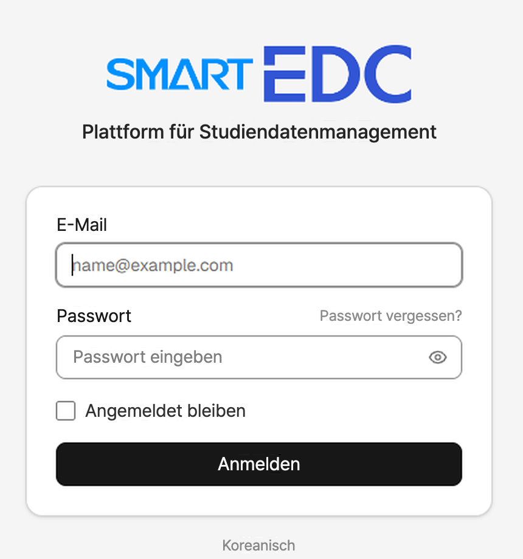
E-Mail — Geben Sie die E-Mail-Adresse ein, die als Konto registriert ist.
Passwort — Geben Sie Ihr Anmeldepasswort ein. Es ist ein anderer Wert als das Passwort für die elektronische Signatur.
Angemeldet bleiben — Wenn Sie diese Option wählen, bleibt die Sitzung erhalten, auch wenn Sie den Browser schließen und wieder öffnen. An gemeinsam genutzten PCs wählen Sie sie nicht aus.
Anmelden — Startet die Authentifizierung. Bei Erfolg gelangen Sie zur Plattform-Startseite. Auf welcher Seite Sie landen, hängt jedoch von der jeweiligen Anmeldesituation ab 1.4.
Passwort vergessen? — Öffnet die Seite zum Zurücksetzen des Passworts Kap. 2.
Umschalter für die Passwortanzeige — Zeigt das eingegebene Passwort im Klartext an. Verwenden Sie ihn nicht, wenn andere Personen in der Nähe sind.
Sprachanzeige — Zeigt die aktuelle Anzeigesprache (Koreanisch) an. Sie lässt sich nicht auswählen; ein Umschalten auf eine andere Sprache wird derzeit nicht angeboten.
Zu beachten
Unbedingt prüfen Datenschäden · Formular nicht abschließbar
- • Pro Konto ist nur eine gleichzeitige Verbindung zulässig. Wenn Sie sich mit demselben Konto auf einem anderen Gerät oder in einem anderen Browser anmelden, wird die zuvor bestehende Sitzung sofort beendet. Nicht gespeicherte Eingaben bleiben dabei nicht erhalten.
1.2Fehlgeschlagene Anmeldung
Überblick
Wenn die Kombination aus E-Mail-Adresse und Passwort nicht übereinstimmt, wird unter den Eingabefeldern eine Warnung angezeigt und der Bildschirm bleibt unverändert. Es wird nicht angezeigt, welcher der beiden Werte falsch ist. Damit nicht erkennbar ist, ob ein Konto existiert, werden beide Fälle mit demselben Hinweistext behandelt.
Bildschirmbeschreibung
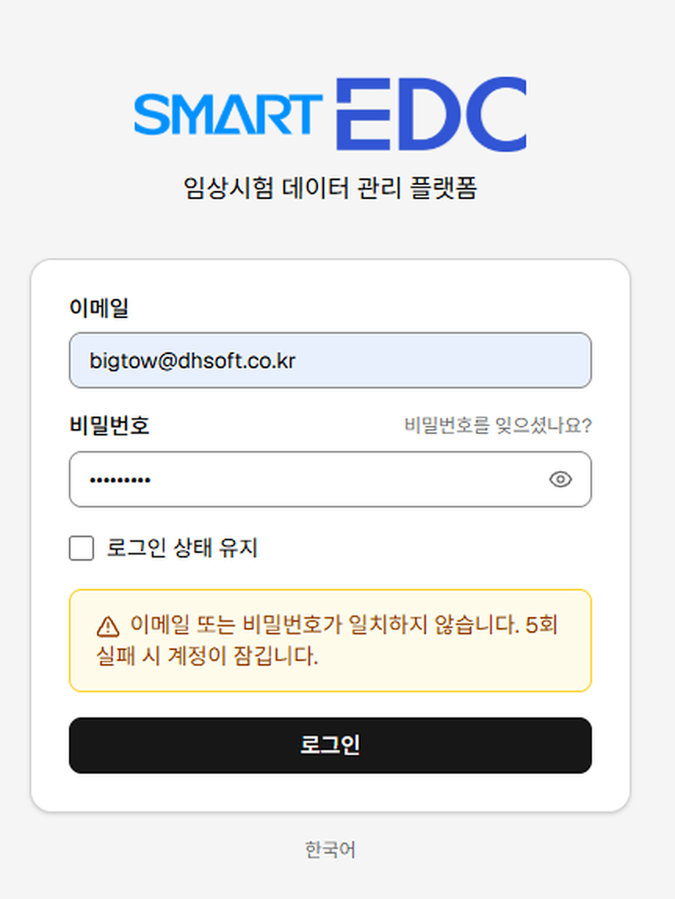
Die Eingaben bleiben erhalten. Sie müssen die E-Mail-Adresse nicht erneut eingeben, sondern können nur das Passwort korrigieren und den Versuch wiederholen.
Wählen Sie Anmelden erneut, um den Versuch zu wiederholen.
Die Warnung „E-Mail-Adresse oder Passwort stimmt nicht überein. Nach 5 Fehlversuchen wird das Konto gesperrt.“ wird angezeigt. Die verbleibende Anzahl an Versuchen wird nicht angezeigt.
Wenn Ihnen das Passwort nicht mehr einfällt, wiederholen Sie den Versuch nicht. Setzen Sie es stattdessen über Passwort vergessen? zurück Kap. 2.
Zu beachten
Leicht missverständliches Verhalten
- • Die Fehlversuche werden fortlaufend gezählt, bis eine Anmeldung gelingt. Auch wenn Sie die Seite neu laden oder den Browser erneut öffnen, werden sie nicht zurückgesetzt.
1.3Kontosperrung
Überblick
Nach 5 aufeinanderfolgenden fehlgeschlagenen Anmeldungen wird das Konto gesperrt. Ein gesperrtes Konto lässt sich auch mit dem richtigen Passwort nicht anmelden, und die Sperre wird nach einiger Zeit nicht automatisch aufgehoben. Der Systemadministrator muss die Sperre aufheben.
Bildschirmbeschreibung
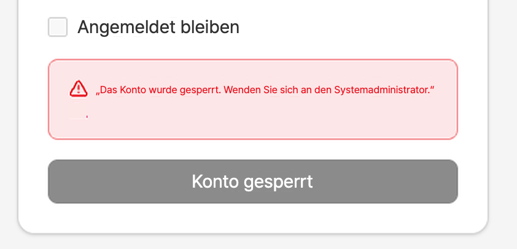
Die Schaltfläche zur Anmeldung wechselt zu „Konto gesperrt“ und lässt sich nicht mehr auswählen. Die Eingabefelder für E-Mail-Adresse und Passwort werden ebenfalls deaktiviert.
Der Warnhinweis „Das Konto wurde gesperrt. Wenden Sie sich an den Systemadministrator.“ wird in Rot angezeigt.
Zu beachten
Unbedingt prüfen Datenschäden · Formular nicht abschließbar
- • Die Sperre wird durch eine Zurücksetzung des Passworts nicht aufgehoben. Auch wenn Sie einen Zurücksetzungslink erhalten und ein neues Passwort festlegen, bleibt das Konto gesperrt. Bitten Sie daher den Systemadministrator, die Sperre aufzuheben.
1.4Erfolgreiche Anmeldung (Plattform-Startseite)
Überblick
Nach erfolgreicher Authentifizierung gelangen Sie zur Plattform-Startseite. Ihr Aufbau richtet sich nach den Berechtigungen. Von hier aus öffnen Sie Workspaces und Projekte. Die Plattform-Startseite ist jedoch nicht immer die Seite, auf der Sie nach der Anmeldung landen. Beachten Sie dazu die Hinweise unten. Der Screenshot zeigt den Bildschirm eines Systemadministrator-Kontos.
Bildschirmbeschreibung
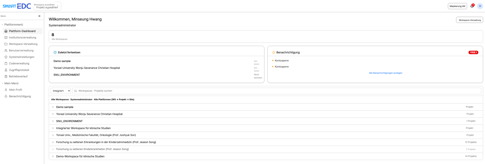
Linkes Menü — Es werden nur die Einträge angezeigt, für die Sie eine Berechtigung haben. Menüs ohne Berechtigung erscheinen nicht in der Liste.
Fortsetzen — Der zuletzt geöffnete Workspace. Sie gelangen direkt dorthin, ohne die Liste zu durchlaufen.
Benachrichtigungen — Hier werden nicht gelesene Benachrichtigungen angezeigt.
Workspace-Liste — Zeigt die Workspaces, für die Sie eine Berechtigung haben. Wenn Sie einen Workspace auswählen, klappen die untergeordneten Projekte auf.
Kontextwechsel — Zeigt den aktuellen Workspace und das aktuelle Projekt an. Von jedem Bildschirm aus können Sie in einen anderen Kontext wechseln.
Anzeige der Maskierung personenbezogener Daten — Je nach Berechtigung wird festgelegt, ob die Identifikationsdaten der Probanden angezeigt werden.
Zu beachten
Leicht missverständliches Verhalten
- • Die Seite, auf der Sie nach der Anmeldung landen, hängt von drei Fällen ab. Normalerweise ist es die Plattform-Startseite. Ist die Sitzung abgelaufen und sind Sie zum Anmeldebildschirm zurückgeleitet worden, kehren Sie zu dem Bildschirm zurück, den Sie zuletzt angesehen haben. Muss das Passwort geändert werden, gelangen Sie zum Bildschirm zur Passwortänderung. Dass die Plattform-Startseite nicht angezeigt wird, ist kein Fehler.
- • Wenn Sie 30 Minuten lang nichts bedienen, läuft die Sitzung ab und Sie gelangen zum Anmeldebildschirm zurück. Auch wenn Sie weiterarbeiten, müssen Sie sich 24 Stunden nach der ersten Anmeldung erneut anmelden.
Passwort zurücksetzen
- 2.1Zurücksetzung anfordern
- 2.2Zurücksetzungs-E-Mail prüfen
- 2.3Neues Passwort festlegen
- 2.4Eingabeprüfung
- 2.5Anmeldung nach der Zurücksetzung
2.1Zurücksetzung anfordern
Überblick
Wenn Sie Ihr Passwort verloren haben, erhalten Sie einen Zurücksetzungslink an die registrierte E-Mail-Adresse. Sie gelangen über Passwort vergessen? auf dem Anmeldebildschirm dorthin (SCR-ACC-005).
Bildschirmbeschreibung
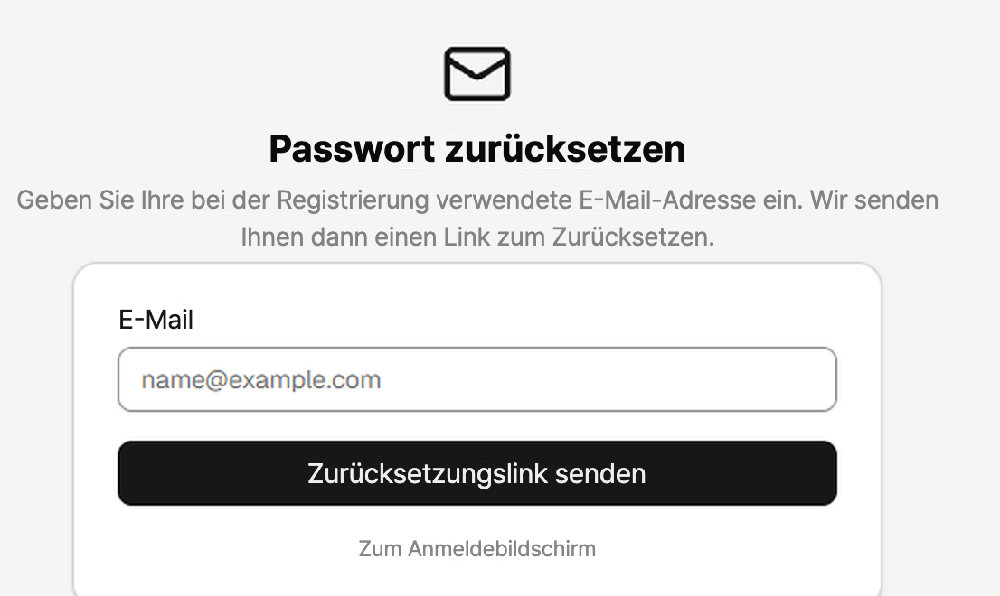
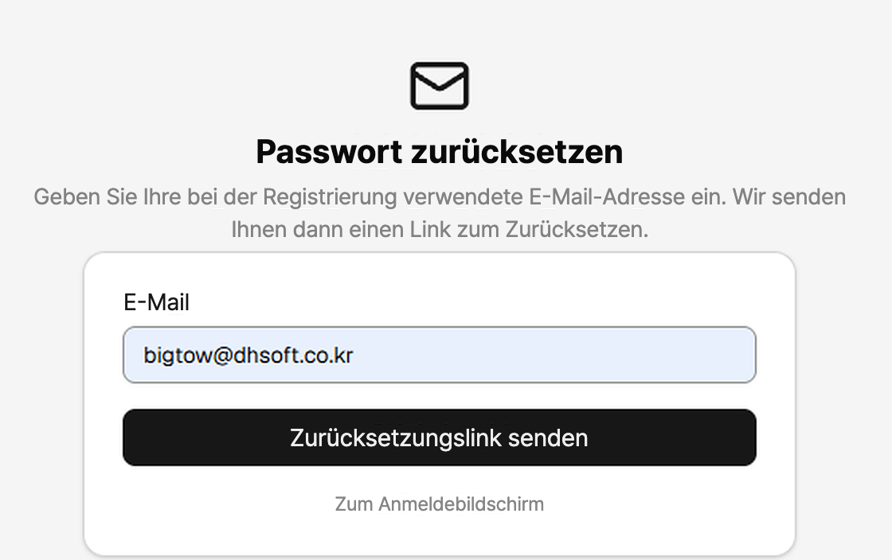
E-Mail — Geben Sie die E-Mail-Adresse ein, die als Konto registriert ist.
Die eingegebene Adresse wird angezeigt. Auch bei einer nicht registrierten Adresse erscheint dieselbe Abschlussmeldung. Antworten werden nicht unterschieden, damit nicht erkennbar ist, ob ein Konto besteht.
Zurücksetzungslink senden — Sendet eine E-Mail zum Zurücksetzen des Passworts an die eingegebene Adresse.
Zum Anmeldebildschirm — Bricht die Zurücksetzung ab und führt zurück zum Anmeldebildschirm.
Zu beachten
Leicht missverständliches Verhalten
- • Wenn die E-Mail nicht ankommt, prüfen Sie zuerst den Spam-Ordner. Ist sie auch dort nicht, weicht die eingegebene Adresse möglicherweise von der im Konto hinterlegten Adresse ab.
2.2Zurücksetzungs-E-Mail prüfen
Überblick
Die gesendete E-Mail enthält einen Link, über den Sie ein neues Passwort festlegen. Der Link kann nur einmal verwendet werden und verliert nach der in der E-Mail genannten Zeit seine Gültigkeit.
Bildschirmbeschreibung
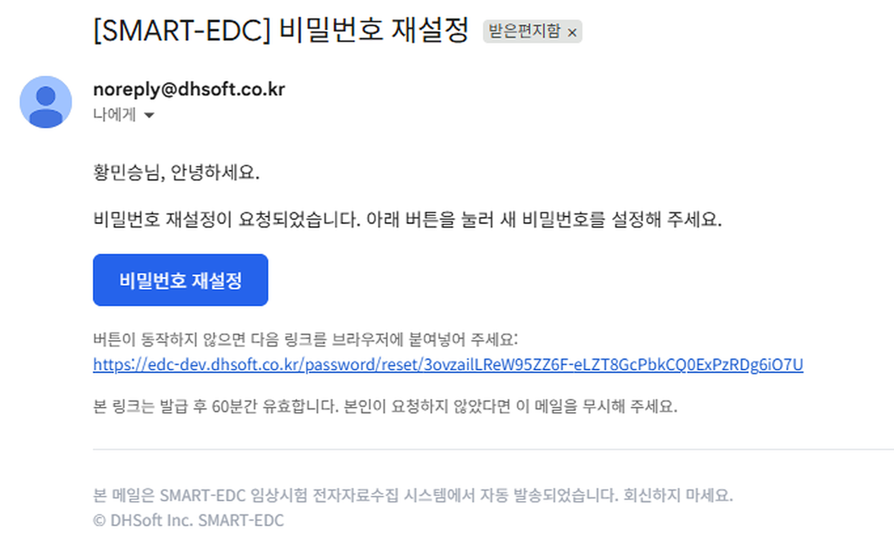
Passwort zurücksetzen — Öffnet bei Auswahl die Seite zum Festlegen eines neuen Passworts.
Die Absenderadresse dient nur dem Versand. Antworten auf diese E-Mail werden nicht zugestellt.
Wenn die Schaltfläche nicht funktioniert, fügen Sie die unten stehende Adresse direkt in die Adressleiste des Browsers ein.
Die Gültigkeitsdauer wird angegeben. Wenn Sie den Link nach Ablauf öffnen, erscheint „Der Zurücksetzungslink ist abgelaufen. Bitte fordern Sie einen neuen an.“ Fordern Sie in diesem Fall in 2.1 erneut eine Zurücksetzung an.
Zu beachten
Unbedingt prüfen Datenschäden · Formular nicht abschließbar
- • Wenn Sie eine Zurücksetzungs-E-Mail erhalten, die Sie nicht selbst angefordert haben, wählen Sie den Link nicht aus, sondern informieren Sie den Systemadministrator. Wenn Sie die E-Mail ignorieren, bleibt Ihr bisheriges Passwort unverändert.
Leicht missverständliches Verhalten
- • Die Gründe, aus denen ein Link nicht verwendbar ist, werden in drei Fällen unterschieden. Ist die Frist abgelaufen, erscheint „Der Zurücksetzungslink ist abgelaufen“. Ist die Adresse fehlerhaft, erscheint „Ungültiger Zurücksetzungslink“. Wurde die Zurücksetzung bereits abgeschlossen, erscheint „Der Zurücksetzungslink wurde bereits verwendet“. In allen Fällen fordern Sie in 2.1 erneut eine Zurücksetzung an.
2.3Neues Passwort festlegen
Überblick
Wenn Sie den Link aus der E-Mail öffnen, erscheint der Bildschirm zum Festlegen eines neuen Passworts. Die Zurücksetzung lässt sich nur abschließen, wenn alle Bedingungen erfüllt sind und die beiden Eingabefelder übereinstimmen.
Bildschirmbeschreibung
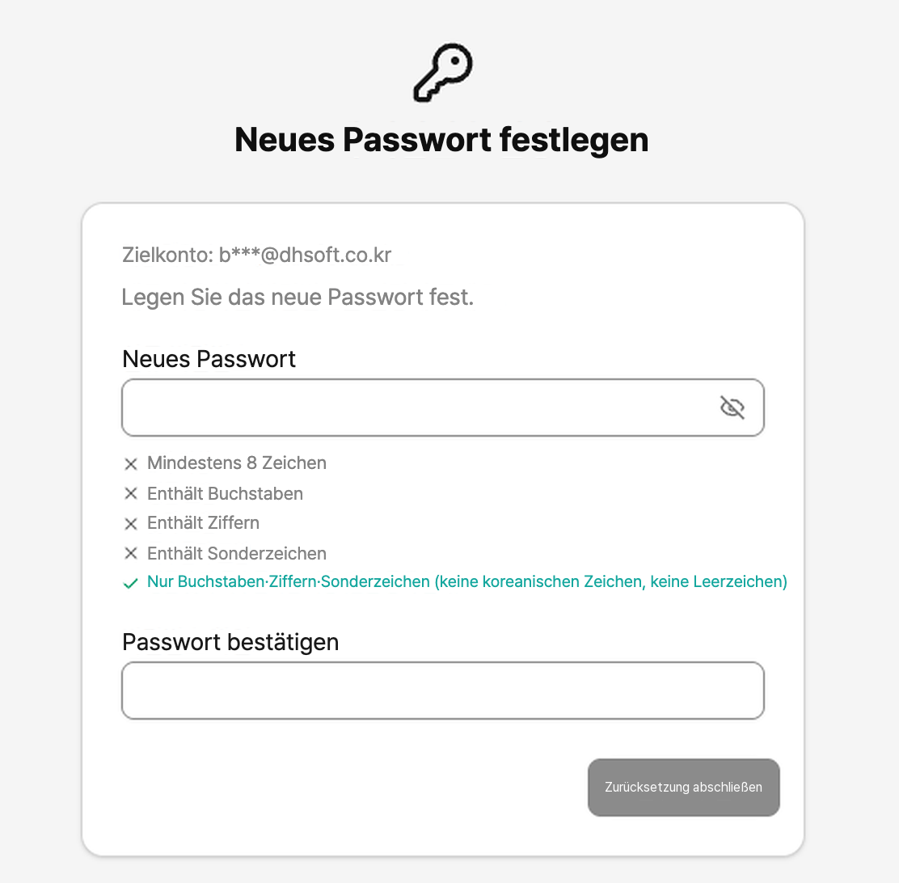
Neues Passwort — Geben Sie das Passwort ein, das Sie künftig verwenden möchten.
Die Erfüllung der Bedingungen wird bei jeder Eingabe aktualisiert. Erfüllte Punkte werden mit einem Häkchen markiert.
Passwort bestätigen — Geben Sie denselben Wert noch einmal ein.
Zurücksetzung abschließen — Bleibt inaktiv, bis alle Bedingungen erfüllt sind und beide Werte übereinstimmen.
Das Zielkonto wird teilweise verdeckt angezeigt. Prüfen Sie, ob es das beabsichtigte Konto ist.
Umschalter für die Passwortanzeige — Zeigt den eingegebenen Wert im Klartext an.
Zu beachten
Leicht missverständliches Verhalten
- • Inhalt und Anzahl der Bedingungen können je nach Systemeinstellung abweichen. Maßgeblich ist die Liste, die auf dem Bildschirm angezeigt wird.
2.4Eingabeprüfung ① Bedingung nicht erfüllt · Abweichung
Überblick
Wenn die Bedingungen nicht erfüllt sind oder die beiden Eingabefelder unterschiedliche Werte enthalten, wird dies direkt angezeigt. Da es sich um zwei getrennte Prüfungen handelt, lässt sich die Zurücksetzung nicht abschließen, wenn nur eine davon bestanden ist.
Bildschirmbeschreibung
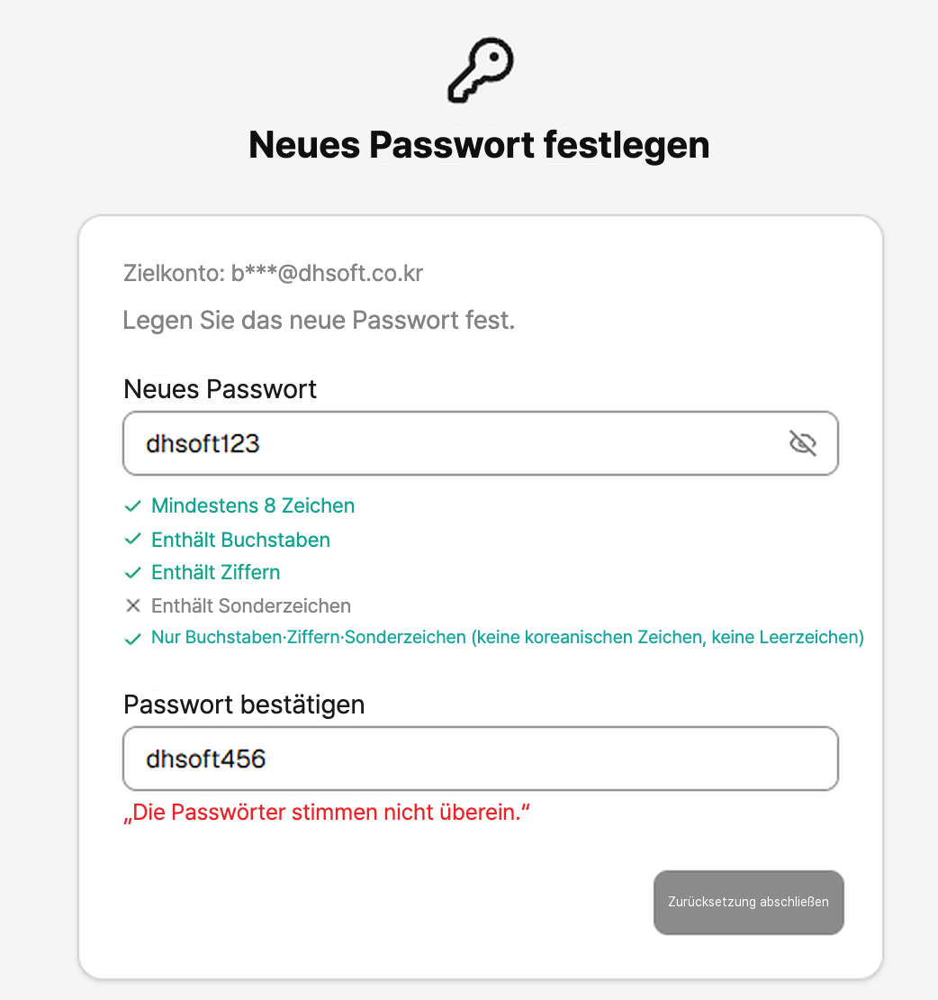
Sie haben einen Wert eingegeben, der die Bedingungen nicht erfüllt.
Nur die nicht erfüllten Punkte bleiben mit einem grauen ✕ markiert. Prüfen Sie in dieser Liste, was fehlt.
Sie haben in Passwort bestätigen einen anderen Wert eingegeben als im Feld davor.
Unter dem Eingabefeld erscheint „Die Passwörter stimmen nicht überein.“
Solange eine der beiden Prüfungen nicht bestanden ist, bleibt Zurücksetzung abschließen inaktiv.
Zu beachten
Leicht missverständliches Verhalten
- • Die Bedingungsliste prüft nur das Feld Neues Passwort. Auch wenn alle Punkte der Liste als erfüllt markiert sind, lässt sich die Zurücksetzung nicht abschließen, solange die beiden Werte voneinander abweichen.
2.4Eingabeprüfung ② Bedingungen erfüllt
Überblick
Wenn alle Bedingungen erfüllt sind und die beiden Eingabefelder denselben Wert haben, lässt sich die Zurücksetzung abschließen.
Bildschirmbeschreibung
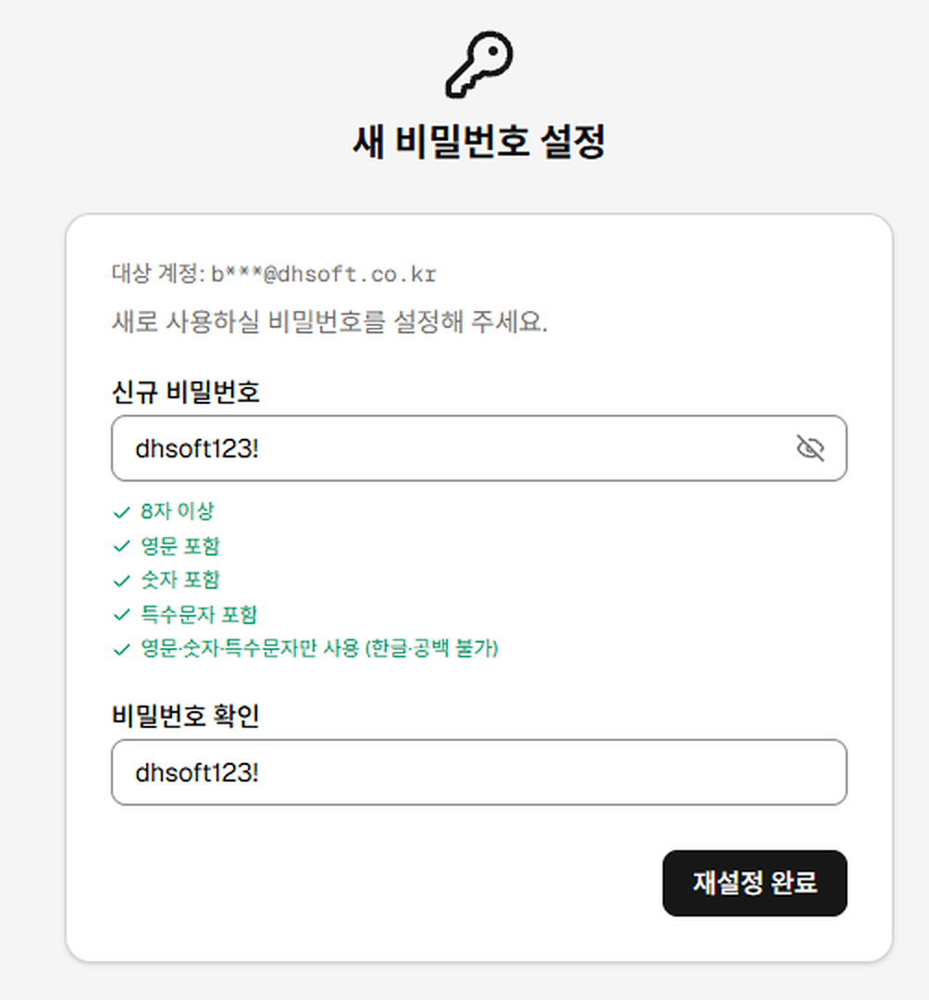
Sie haben einen Wert eingegeben, der alle Bedingungen erfüllt.
Alle Punkte der Liste werden mit einem grünen Häkchen markiert.
Geben Sie in Passwort bestätigen denselben Wert ein. Der Hinweis zur Abweichung verschwindet.
Zurücksetzung abschließen wird aktiviert. Bei Auswahl wird das Passwort geändert und Sie gelangen zum Anmeldebildschirm.
Zu beachten
Unbedingt prüfen Datenschäden · Formular nicht abschließbar
- • Mit dem Abschluss der Zurücksetzung verliert der Link sofort seine Gültigkeit. Mit demselben Link können Sie das Passwort nicht noch einmal ändern. Schließen Sie die Zurücksetzung daher erst ab, wenn Sie sich das neue Passwort sicher gemerkt haben.
2.5Anmeldung nach der Zurücksetzung
Überblick
Nach der Zurücksetzung kehren Sie zum Anmeldebildschirm zurück. Die automatische Anmeldung erfolgt nicht; Sie müssen sich mit dem neuen Passwort erneut authentifizieren.
Bildschirmbeschreibung
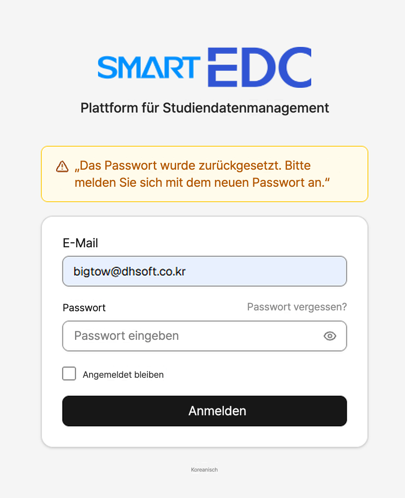
Anmelden — Authentifizieren Sie sich mit dem neuen Passwort. Bei Erfolg gelangen Sie zur Plattform-Startseite 1.4.
Die Abschlussmeldung „Das Passwort wurde zurückgesetzt. Bitte melden Sie sich mit dem neuen Passwort an.“ wird angezeigt.
Dass das Feld für die E-Mail-Adresse bereits ausgefüllt erscheint, liegt an der automatischen Vervollständigung des Browsers. Das System setzt diesen Wert nicht selbst ein. In einem anderen Browser oder einem privaten Fenster bleibt das Feld leer.
Das Passwortfeld ist leer. Geben Sie das neu festgelegte Passwort ein.
Zu beachten
Unbedingt prüfen Datenschäden · Formular nicht abschließbar
- • Auch nach einer Zurücksetzung des Passworts werden die bisher angesammelten Fehlversuche und eine Kontosperre nicht aufgehoben. Ein gesperrtes Konto muss der Systemadministrator freigeben 1.3.
Abmeldung
- 3.1Profilmenü öffnen
- 3.2Abmeldung bestätigen
3.1Profilmenü öffnen
Überblick
Die Abmeldung erfolgt über das Profilmenü oben rechts. In diesem Menü sind auch die Einstellungen zum Konto zusammengefasst.
Bildschirmbeschreibung
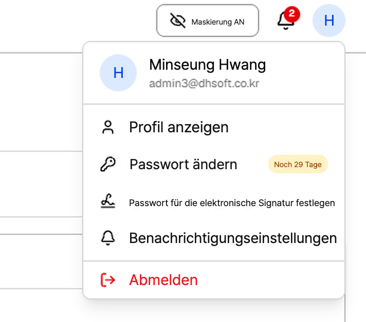
Profilsymbol — Wenn Sie es auswählen, klappt das Kontomenü auf. Es befindet sich auf jedem Bildschirm an derselben Stelle.
Name und E-Mail-Adresse des aktuell angemeldeten Kontos werden angezeigt. So können Sie prüfen, ob es das beabsichtigte Konto ist.
Abmelden — Öffnet einen Bestätigungsdialog 3.2.
Passwort ändern — Verwenden Sie diese Option, wenn Sie Ihr aktuelles Passwort kennen und es ändern möchten. Das Badge daneben zeigt die Restlaufzeit bis zum Ablauf an.
Passwort für die elektronische Signatur festlegen — Ein anderer Wert als das Anmeldepasswort.
Zu beachten
Leicht missverständliches Verhalten
- • Das Passwort läuft alle 90 Tage ab. Auch nach dem Ablauf wird die Arbeit nicht sofort gesperrt. Im Hinweisdialog können Sie die Änderung bis zu dreimal aufschieben. Erst wenn alle Aufschubmöglichkeiten verbraucht sind, werden Sie beim nächsten Anmelden zum Änderungsbildschirm geleitet, und vor der Änderung können Sie nicht weiterarbeiten. Wenn im Badge eine Restlaufzeit angezeigt wird, ändern Sie das Passwort rechtzeitig.
3.2Abmeldung bestätigen
Überblick
Wenn Sie Abmelden auswählen, öffnet sich ein Bestätigungsdialog. Nach der Bestätigung wird die Sitzung beendet und Sie gelangen zum Anmeldebildschirm zurück.
Bildschirmbeschreibung
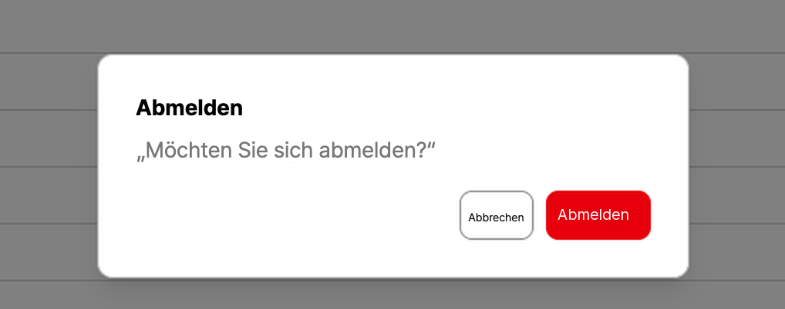
Abmelden — Beendet die Sitzung. Mit der Zurück-Funktion des Browsers gelangen Sie nicht wieder zur vorherigen Seite.
Abbrechen — Bricht die Abmeldung ab und führt zurück zur vorherigen Seite.
Die Bestätigungsfrage „Möchten Sie sich abmelden?“ wird angezeigt.
Zu beachten
Unbedingt prüfen Datenschäden · Formular nicht abschließbar
- • Eingaben, die Sie gerade bearbeiten, bleiben nur erhalten, wenn Sie sie speichern. Speichern Sie vor der Abmeldung.